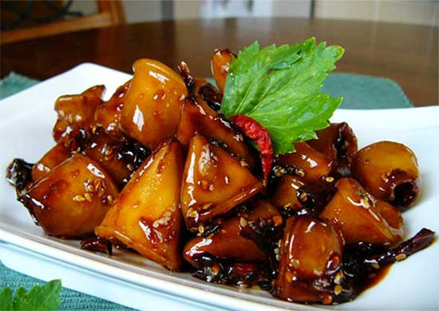

Resep masakan
Cumi Kecap Manis

Bahan-bahan
- 500 gram cumi ukuran sedang, kemudian bersihkan
- 2 lembar daun jeruk, buang bagian tulangnya
- 4 lembar daun salam
- 2 ruas lengkuas, memarkan
- 3 sendok makan kecap manis
- 1 sendok makan air asam jawa
- Garam secukupnya
Bumbu halus
- 2 siung bawang putih
- 4 butir bawang merah
- 2 buah cabai merah besar
- 1 ruas kunyit
Cara membuat
- Siapkan wajan dan minyak kemudian panaskan dengan menggunakan api sedang.
- Masukan bumbu halus ke dalam wajan bersama dengan daun salam, daun jeruk, serta lengkuas. Tumis semua bahan tersebut hingga harum.
- Setelah beberapa saat dan tercium wangi harum lalu masukkan cumi ke dalamnya, aduk rata.
- Tambahkan beberapa bahan perasa makanan antara lain seperti air asam jawa, kecap manis dan garam. Lanjutkan masak hingga bumbu meresap.
- Setelah dirasa matang dan bumbu meresap anda bisa mengangkatnya dan sajikan segera selagi hangat agar lebih nikmat.